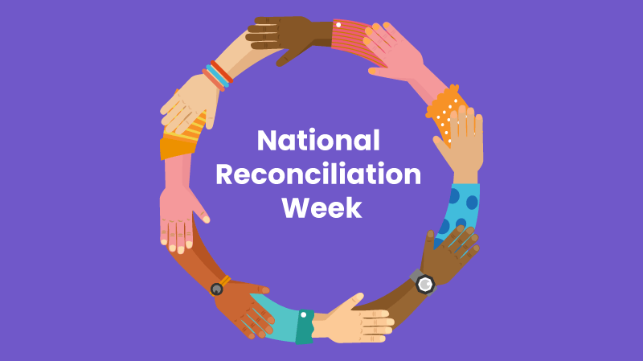

National Reconciliation Week (NRW) is a time for all Australians to learn about our shared histories, cultures, and achievements, and to explore how each of us can contribute to achieving reconciliation in Australia.
This theme is a very important reminder that every one of us needs to do all we can to see that Aboriginal and Torres Straits Islanders live with justice and the rights of all people here. We all need to learn and understand more about them and always respect Aboriginal and Torres Straits Islanders.
Please go to the Activity page now.
CLICK HERE